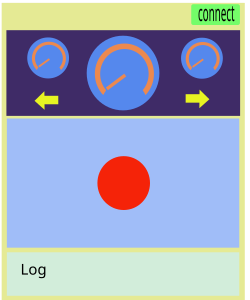
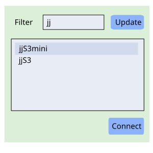

Controller
The controller is a blue tooth (BLE) client, the cart is a BLE server. Once connected, the cart exposes three attributes
- left/right speeds, readable/writable
- log message, read-only
The controller reads the three attributes every half second, but may update the speeds up to per 50 mini seconds if they are changed by the controller.
Web UI

when button connect is pressed, the connection dialog displays
Connection Dialog

- field filter gives prefix name of blue-tooth devices
- button update populates all blue tooth devices that their names start with filter into the list below
- pick one device from the availale list, press button connect to connect the device.
Status Panel
Once the device is connected, the controller read speeds of
two wheels of the cart, left and right.
The top panel (the purple panel) contains
- speeds of left and right of the cart (the two small speed meters), the values are read/updated from blue-tooth
- speed of cart, calculated using the two speed of wheels
- left/right turn signals, also calculate d by speed of two wheels
Control Panel
The light blue panel below the status panel. There’s a red dot in the center of the panel.
- The red dot can be dragged around in the control panel. Once released, it resets to the center of the panel in 0.5 second.
- Once the red dot is dragged off the center, its x-offset indicates left/right turn, its y-offset indicated the cart speed up/down.
- all values are measured in percentage, and stepped in 20%, for example, let’s say the panel size is 400x200, that its coordinates are (-200, -100) to (200, 100), and the dot position is (140, 30), that means the cart turn right at scale 140/200=70% which falls to 60% level (0, 20%, 40%, 60%, 80%, 100%), and speed up 30/100=30%, which falls to 20%.
- sampling interval is 50ms, step values into 20% removes unnecessary updates of trival values. If values are changed, they are sent to the blue-tooth device, i.e. the cart.
- if the red dot is double clicked, the two wheels stops in half second.
Log Panel
- local (i.e. the controller itself) and remote (the cart) debug information are appended to the log text area.
- log messages are appended, the screen scrolls unless the cursor is not at the last line
- log can be cleaned any time